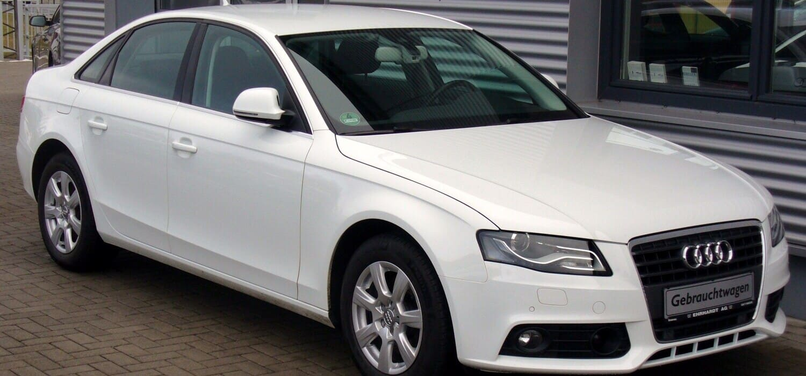
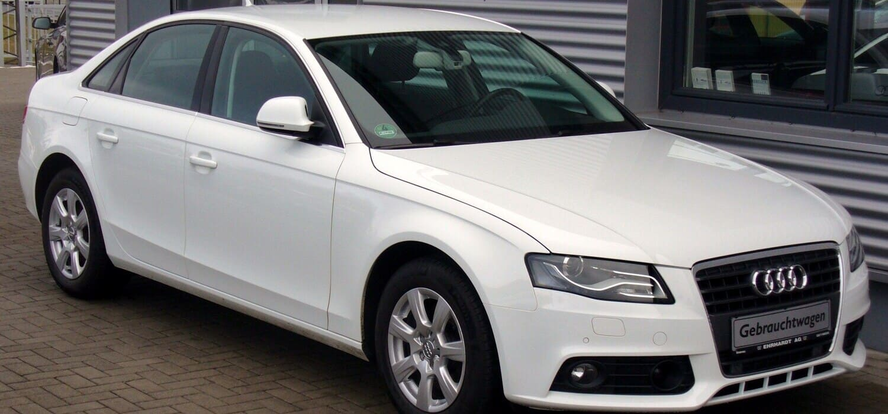

Audi A4 B8
Audi A4 IV zostało zaprezentowane po raz pierwszy we wrześniu 2007 roku. Samochód oznaczono kodem fabrycznym B8. Premiera miała miejsce podczas Międzynarodowej Wystawy Samochodowej we Frankfurcie w 2007 roku. Wersję kombi zaprezentowano rok później podczas wystawy w Genewie. Od 2009 roku dostępna jest usportowiona wersja S4. W 2011 roku auto przeszło face lifting. W tym samym roku do oferty wprowadzono wersję Allroad. W roku 2012 na rynku pojawiła się sportowa wersja modelu – RS4, oferowana wyłącznie jako Avant. Od roku 2009 na chińskim rynku oferowana jest produkowana lokalnie, w zakładach w Changchun, wersja A4L z przedłużonym o 60 mm rozstawem osi. Model B8 zbudowany jest w oparciu o koncepcję modułowej, podłużnej budowy karoserii, stosowanej przez Audi dla samochodów z silnikiem umieszczonym podłużnie.
 

Dane samochodu
Segment:
D
Typy nadwozia:
4-drzwiowy sedan
5-drzwiowe kombi
Skrzynia biegów:
6-biegowa manualna
7-biegowa półautomatyczna S-tronic
CVT Multitronic
Napęd:
przedni
quattro
Długość:
4703 mm
Allroad: 4721 mm
LWB: 4763 mm
Szerokość:
1826 mm
Allroad: 1841 mm
Wysokość:
sedan: 1427 mm
kombi: 1436 mm
Allroad: 1495 mm
LWB: 1426 mm
Rozstaw osi:
2808 mm
Allroad: 2805 mm
LWB: 2869 mm
Masa własna:
1410 – 1655 kg
Zbiornik paliwa:
64 / 65 / 70 l
Liczba miejsc:
5
Test Euro NCAP
5 gwiazdek
Bagażnik:
480 – 962 l
kombi: 490 – 1430 l
Wyposażenie dodatkowe:
Układ Multi Media Interface